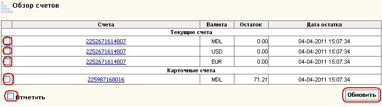
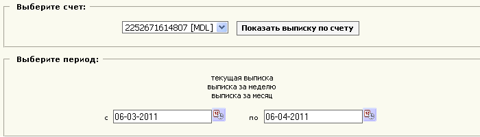

| |
||
|
|
Чтобы обновить информацию о счетах, поставьте галочку и нажмите обновить
Для просмотра выписки о текущем счете, историю операций по счету, нажмите на номер счета.
Меню выписки предоставляет возможность получить всю информацию о выбранной учетной записи, в виде списка, который удобен для распечатки.
Чтоб получить выписку, выберите нужный счет из меню, и выберите нужный период времени (выписка за день/неделю / месяц, или указать необходимый отрезок времени) и нажмите Показать выписку.
